import shapely
import geopandas as gpd
import numpy as np
import os
import rasterio
import scipy.ndimage
import rasterio.plot
import rasterio.merge
import rasterio.features3 Spatial data operations
3.1 Prerequisites
Let’s import the required packages:
and load the sample data for this chapter:
nz = gpd.read_file('data/nz.gpkg')
nz_height = gpd.read_file('data/nz_height.gpkg')
world = gpd.read_file('data/world.gpkg')
cycle_hire = gpd.read_file('data/cycle_hire.gpkg')
cycle_hire_osm = gpd.read_file('data/cycle_hire_osm.gpkg')
src_elev = rasterio.open('data/elev.tif')
src_multi_rast = rasterio.open('data/landsat.tif')
src_grain = rasterio.open('data/grain.tif')3.2 Introduction
3.3 Spatial operations on vector data
3.3.1 Spatial subsetting
Spatial subsetting is the process of taking a spatial object and returning a new object containing only features that relate in space to another object. Analogous to attribute subsetting (covered in sec-vector-attribute-subsetting), subsets of GeoDataFrames can be created with square bracket ([) operator using the syntax x[y], where x is an GeoDataFrame from which a subset of rows/features will be returned, and y is the ‘subsetting object’. y, in turn, can be created using one of the binary geometry relation methods, such as .intersects (see sec-topological-relations).
To demonstrate spatial subsetting, we will use the nz and nz_height layers, which contain geographic data on the 16 main regions and 101 highest points in New Zealand, respectively (Figure fig-spatial-subset), in a projected coordinate system. The following lines of code create an object representing Canterbury (canterbury), then use spatial subsetting to return all high points in the region (canterbury_height):
canterbury = nz[nz['Name'] == 'Canterbury']
canterbury| Name | Island | Land_area | ... | Median_income | Sex_ratio | geometry | |
|---|---|---|---|---|---|---|---|
| 10 | Canterbury | South | 44504.499091 | ... | 30100 | 0.975327 | MULTIPOLYGON (((1686901.914 535... |
1 rows × 7 columns
# Does each 'nz_height' point intersect with 'canterbury'?
sel = nz_height.intersects(canterbury['geometry'].iloc[0])
sel0 False
1 False
...
99 False
100 False
Length: 101, dtype: boolcanterbury_height = nz_height[sel]
canterbury_height| t50_fid | elevation | geometry | |
|---|---|---|---|
| 4 | 2362630 | 2749 | POINT (1378169.600 5158491.453) |
| 5 | 2362814 | 2822 | POINT (1389460.041 5168749.086) |
| ... | ... | ... | ... |
| 93 | 2380300 | 2711 | POINT (1654213.379 5349962.973) |
| 94 | 2380308 | 2885 | POINT (1654898.622 5350462.779) |
70 rows × 3 columns
fig, axes = plt.subplots(1, 2, figsize=(8, 4))
base = nz.plot(color='white', edgecolor='lightgrey', ax=axes[0])
nz_height.plot(ax=base, color='None', edgecolor='red')
base = nz.plot(color='white', edgecolor='lightgrey', ax=axes[1])
canterbury.plot(ax=base, color='grey', edgecolor='none')
canterbury_height.plot(ax=base, color='None', edgecolor='red')
axes[0].set_title('Original')
axes[1].set_title('Subset (intersects)');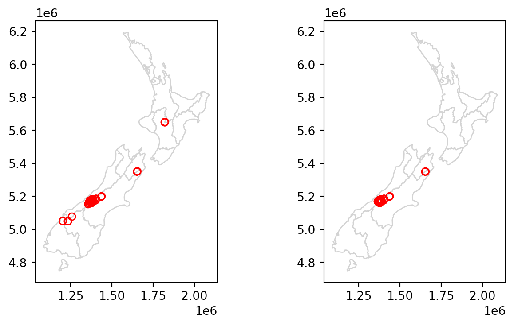
Like in attribute subsetting (sec-vector-attribute-subsetting), we are using a boolean series (sel), of the same length as the number of rows in the filtered table (nz_height), created based on a condition applied on itself. The difference is that the condition is not a comparison of attribute values, but an evaluation of a spatial relation. Namely, we evaluate whether each geometry of nz_height intersects with canterbury geometry, using the .intersects method.
Various topological relations can be used for spatial subsetting which determine the type of spatial relationship that features in the target object must have with the subsetting object to be selected. These include touches, crosses or within, as we will see shortly in sec-topological-relations. The most commonly used method .intersects method which we used in the last example is a ‘catch all’ topological relation, that will return features in the target that touch, cross or are within the source ‘subsetting’ object. Alternatively, we can evaluate other methods, such as .disjoint to obtain all points that do not intersect with Canterbury:
# Is each 'nz_height' point disjoint from 'canterbury'?
sel = nz_height.disjoint(canterbury['geometry'].iloc[0])
canterbury_height2 = nz_height[sel]as shown in Figure fig-spatial-subset-disjoint:
fig, axes = plt.subplots(1, 2, figsize=(8, 4))
base = nz.plot(color='white', edgecolor='lightgrey', ax=axes[0])
nz_height.plot(ax=base, color='None', edgecolor='red')
base = nz.plot(color='white', edgecolor='lightgrey', ax=axes[1])
canterbury.plot(ax=base, color='grey', edgecolor='none')
canterbury_height2.plot(ax=base, color='None', edgecolor='red');
axes[0].set_title('Original')
axes[1].set_title('Subset (disjoint)');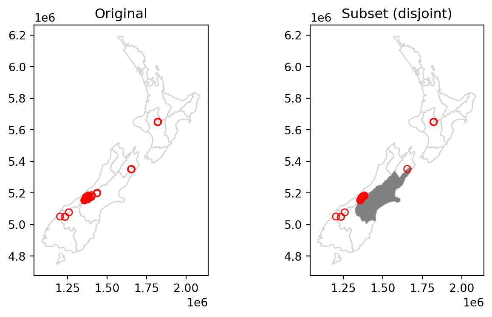
In case we need to subset according to several geometries at once, e.g., find out which points intersect with both Canterbury and Southland, we can dissolve the filtering subset before applying the .intersects (or any other) operator:
canterbury_southland = nz[(nz['Name'] == 'Canterbury') | (nz['Name'] == 'Southland')]
canterbury_southland = canterbury_southland.unary_union
canterbury_southland
sel = nz_height.intersects(canterbury_southland)
canterbury_southland_height = nz_height[sel]
canterbury_southland_height| t50_fid | elevation | geometry | |
|---|---|---|---|
| 0 | 2353944 | 2723 | POINT (1204142.603 5049971.287) |
| 4 | 2362630 | 2749 | POINT (1378169.600 5158491.453) |
| ... | ... | ... | ... |
| 93 | 2380300 | 2711 | POINT (1654213.379 5349962.973) |
| 94 | 2380308 | 2885 | POINT (1654898.622 5350462.779) |
71 rows × 3 columns
or, alternatively, we can use the .isin function to filter the regions and use .overlay to calculate the pairwise intersection between the canterbury_southland GeoDataFrame (with two rows for Canterbury and Southland, respectively) and the nz_height GeoDataFrame:
canterbury_southland = nz[nz['Name'].isin(['Canterbury', 'Southland'])]
canterbury_southland
nz_height.overlay(canterbury_southland)| t50_fid | elevation | Name | ... | Median_income | Sex_ratio | geometry | |
|---|---|---|---|---|---|---|---|
| 0 | 2353944 | 2723 | Southland | ... | 29500 | 0.978507 | POINT (1204142.603 5049971.287) |
| 1 | 2362630 | 2749 | Canterbury | ... | 30100 | 0.975327 | POINT (1378169.600 5158491.453) |
| ... | ... | ... | ... | ... | ... | ... | ... |
| 69 | 2380300 | 2711 | Canterbury | ... | 30100 | 0.975327 | POINT (1654213.379 5349962.973) |
| 70 | 2380308 | 2885 | Canterbury | ... | 30100 | 0.975327 | POINT (1654898.622 5350462.779) |
71 rows × 9 columns
The resulting subset is shown in Figure fig-spatial-subset2:
fig, axes = plt.subplots(1, 2, figsize=(8, 4))
base = nz.plot(color='white', edgecolor='lightgrey', ax=axes[0])
nz_height.plot(ax=base, color='None', edgecolor='red')
base = nz.plot(color='white', edgecolor='lightgrey', ax=axes[1])
canterbury_southland.plot(ax=base, color='grey', edgecolor='none')
canterbury_southland_height.plot(ax=base, color='None', edgecolor='red')
axes[0].set_title('Original')
axes[1].set_title('Subset (intersects)');
The next section further explores different types of spatial relation, also known as binary predicates (of which .intersects and .disjoint are two examples), that can be used to identify whether or not two features are spatially related or not.
3.3.2 Topological relations
Topological relations describe the spatial relationships between objects. “Binary topological relationships”, to give them their full name, are logical statements (in that the answer can only be True or False) about the spatial relationships between two objects defined by ordered sets of points (typically forming points, lines and polygons) in two or more dimensions (Egenhofer and Herring 1990). That may sound rather abstract and, indeed, the definition and classification of topological relations is based on mathematical foundations first published in book form in 1966 (Spanier 1995), with the field of algebraic topology continuing into the 21st century (Dieck 2008).
Despite their mathematical origins, topological relations can be understood intuitively with reference to visualizations of commonly used functions that test for common types of spatial relationships. Figure 4.2 shows a variety of geometry pairs and their associated relations. The third and fourth pairs in Figure 4.2 (from left to right and then down) demonstrate that, for some relations, order is important: while the relations equals, intersects, crosses, touches and overlaps are symmetrical, meaning that if function(x, y) is true, function(y, x) will also by true, relations in which the order of the geometries are important such as contains and within are not. Notice that each geometry pair has a “DE-9IM” string such as FF2F11212, described in the next section.

In shapely, functions testing for different types of topological relations are known as “relationships”. To see how topological relations work in practice, let’s create a simple reproducible example, building on the relations illustrated in Figure 4.2 and consolidating knowledge of how vector geometries are represented from a previous chapter (sec-geometry-columns and sec-geometries):
points = gpd.GeoSeries([
shapely.Point(0.2,0.1),
shapely.Point(0.7,0.2),
shapely.Point(0.4,0.8)
])
line = gpd.GeoSeries([
shapely.LineString([(0.4,0.2), (1,0.5)])
])
poly = gpd.GeoSeries([
shapely.Polygon([(0,0), (0,1), (1,1), (1,0.5), (0,0)])
])The resulting GeoSeries named points, line, and poly are visualized as follows:
ax = poly.plot(color='grey', edgecolor='red')
ax = line.plot(ax=ax, color='black', linewidth=7)
points.plot(ax=ax, color='none', edgecolor='black')
for x, y, label in zip(points.x, points.y, [1,2,3]):
ax.annotate(label, xy=(x, y), xytext=(3, 3), weight='bold', textcoords="offset points")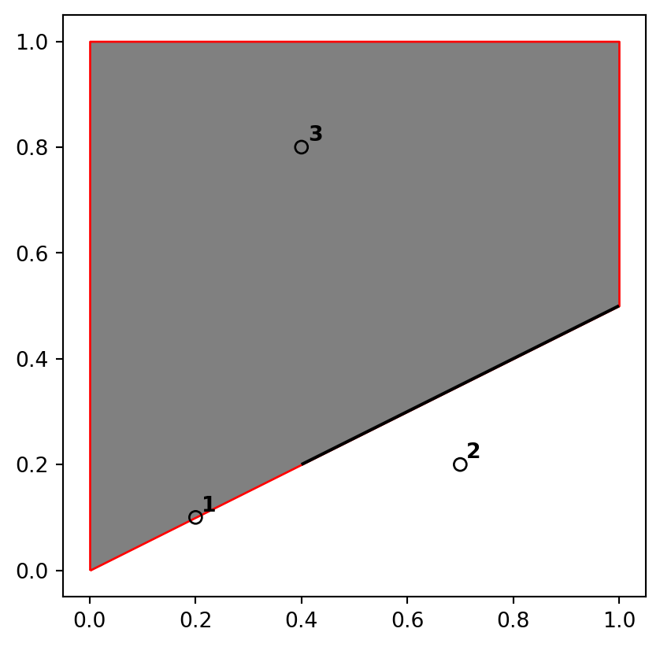
A simple query is: which of the points in points intersect in some way with polygon poly? The question can be answered by inspection (points 1 and 3 are touching and within the polygon, respectively). This question can be answered with the .intersects method, which reports whether or not each geometry in a GeoSeries (points) intersects with a single shapely geometry (poly.iloc[0]). When both inputs are a GeoSeries object, a pairwise evaluation takes place between geometries aligned by index (align=True, the default) or by position (align=False):
points.intersects(poly.iloc[0])0 True
1 False
2 True
dtype: boolThe result shown above is a boolean Series. Its contents should match your intuition: positive (True) results are returned for the first and third point, and a negative result (False) for the second are outside the polygon’s border. Each value in this Series represents a feature in the first input (points).
The .apply method can be used to obtain a matrix of pairwise results. In this case, the result is a DataFrame, where each row represents a points geometry and each column represents a poly geometry. We’ll add another polygon to demonstrate:
poly = gpd.GeoSeries([
shapely.Polygon([(0,0), (0,1), (1,1), (1,0.5), (0,0)]),
shapely.Polygon([(0,0), (1,0.5), (1,0), (0,0)])
])
points.apply(lambda x: poly.intersects(x))| 0 | 1 | |
|---|---|---|
| 0 | True | True |
| 1 | False | True |
| 2 | True | False |
The .intersects method returns True even in cases where the features just touch: intersects is a ‘catch-all’ topological operation which identifies many types of spatial relation, as illustrated in Figure 4.2. More restrictive questions include which points lie within the polygon, and which features are on or contain a shared boundary with it? These can be answered as follows:
points.within(poly.iloc[0])0 False
1 False
2 True
dtype: boolpoints.touches(poly.iloc[0])0 True
1 False
2 False
dtype: boolNote that although the first point touches the boundary polygon, it is not within it; the third point is within the polygon but does not touch any part of its border. The opposite of .intersects is .disjoint, which returns only objects that do not spatially relate in any way to the selecting object:
points.disjoint(poly.iloc[0])0 False
1 True
2 False
dtype: boolAnother useful type of relation is “within distance”, where we detect features that intersect with the target buffered by particular distance. Buffer distance determines how close target objects need to be before they are selected. This can be done by literally buffering (sec-geometries) the target geometry, and evaluating intersection (.intersects, see above). Another way is to calculate the distances and compare them to the distance threshold:
points.distance(poly.iloc[0]) < 0.20 True
1 True
2 True
dtype: boolNote that although point 2 is more than 0.2 units of distance from the nearest vertex of poly, it is still selected when the distance is set to 0.2. This is because distance is measured to the nearest edge, in this case the part of the the polygon that lies directly above point 2 in Figure 4.2. We can verify the actual distance between point 2 and the polygon is 0.13, as follows:
points.iloc[1].distance(poly.iloc[0])0.134164078649987363.3.3 DE-9IM strings
To complete…
3.3.4 Spatial joining
Joining two non-spatial datasets relies on a shared ‘key’ variable, as described in sec-vector-attribute-joining. Spatial data joining applies the same concept, but instead relies on spatial relations, described in the previous section. As with attribute data, joining adds new columns to the target object (the argument x in joining functions), from a source object (y).
The process is illustrated by the following example: imagine you have ten points randomly distributed across the Earth’s surface and you ask, for the points that are on land, which countries are they in? Implementing this idea in a reproducible example will build your geographic data handling skills and show how spatial joins work. The starting point is to create points that are randomly scattered over the Earth’s surface:
np.random.seed(11) ## set seed for reproducibility
bb = world.total_bounds ## the world's bounds
x = np.random.uniform(low=bb[0], high=bb[2], size=10)
y = np.random.uniform(low=bb[1], high=bb[3], size=10)
random_points = gpd.points_from_xy(x, y, crs=4326)
random_points = gpd.GeoSeries(random_points)
random_points = gpd.GeoDataFrame({'geometry': random_points})
random_points| geometry | |
|---|---|
| 0 | POINT (-115.10291 36.78178) |
| 1 | POINT (-172.98891 -71.02938) |
| ... | ... |
| 8 | POINT (159.05039 -34.99599) |
| 9 | POINT (126.28622 -62.49509) |
10 rows × 1 columns
The scenario illustrated in Figure fig-spatial-join shows that the random_points object (top left) lacks attribute data, while the world (top right) has attributes, including country names shown for a sample of countries in the legend. Spatial joins are implemented with gpd.sjoin, as illustrated in the code chunk below. The output is the random_joined object which is illustrated in Figure fig-spatial-join (bottom left). Before creating the joined dataset, we use spatial subsetting to create world_random, which contains only countries that contain random points, to verify the number of country names returned in the joined dataset should be four (see the top right panel of Figure fig-spatial-join).
# Subset
world_random = world[world.intersects(random_points.unary_union)]
world_random| iso_a2 | name_long | continent | ... | lifeExp | gdpPercap | geometry | |
|---|---|---|---|---|---|---|---|
| 4 | US | United States | North America | ... | 78.841463 | 51921.984639 | MULTIPOLYGON (((-171.73166 63.7... |
| 18 | RU | Russian Federation | Europe | ... | 70.743659 | 25284.586202 | MULTIPOLYGON (((-180.00000 64.9... |
| 52 | ML | Mali | Africa | ... | 57.007000 | 1865.160622 | MULTIPOLYGON (((-11.51394 12.44... |
| 159 | AQ | Antarctica | Antarctica | ... | NaN | NaN | MULTIPOLYGON (((-180.00000 -89.... |
4 rows × 11 columns
# Spatial join
random_joined = gpd.sjoin(random_points, world, how='left')
random_joined| geometry | index_right | iso_a2 | ... | pop | lifeExp | gdpPercap | |
|---|---|---|---|---|---|---|---|
| 0 | POINT (-115.10291 36.78178) | 4.0 | US | ... | 318622525.0 | 78.841463 | 51921.984639 |
| 1 | POINT (-172.98891 -71.02938) | NaN | NaN | ... | NaN | NaN | NaN |
| ... | ... | ... | ... | ... | ... | ... | ... |
| 8 | POINT (159.05039 -34.99599) | NaN | NaN | ... | NaN | NaN | NaN |
| 9 | POINT (126.28622 -62.49509) | NaN | NaN | ... | NaN | NaN | NaN |
10 rows × 12 columns
fig, axes = plt.subplots(2, 2, figsize=(8,4))
base = world.plot(color='white', edgecolor='lightgrey', ax=axes[0][0])
random_points.plot(ax=base, color='None', edgecolor='red')
base = world.plot(color='white', edgecolor='lightgrey', ax=axes[0][1])
world_random.plot(ax=base, column='name_long')
base = world.plot(color='white', edgecolor='lightgrey', ax=axes[1][0])
random_joined.geometry.plot(ax=base, color='grey');
random_joined.plot(ax=base, column='name_long', legend=True)
fig.delaxes(axes[1][1]);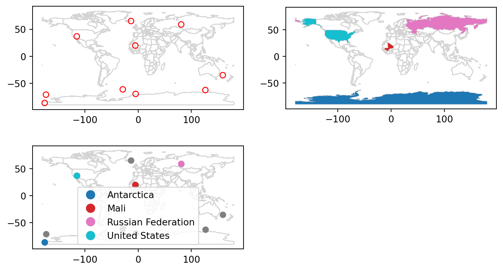
3.3.5 Non-overlapping joins
Sometimes two geographic datasets do not touch but still have a strong geographic relationship. The datasets cycle_hire and cycle_hire_osm, provide a good example. Plotting them shows that they are often closely related but they do not touch, as shown in Figure fig-cycle-hire:
base = cycle_hire.plot(edgecolor='blue', color='none')
cycle_hire_osm.plot(ax=base, edgecolor='red', color='none');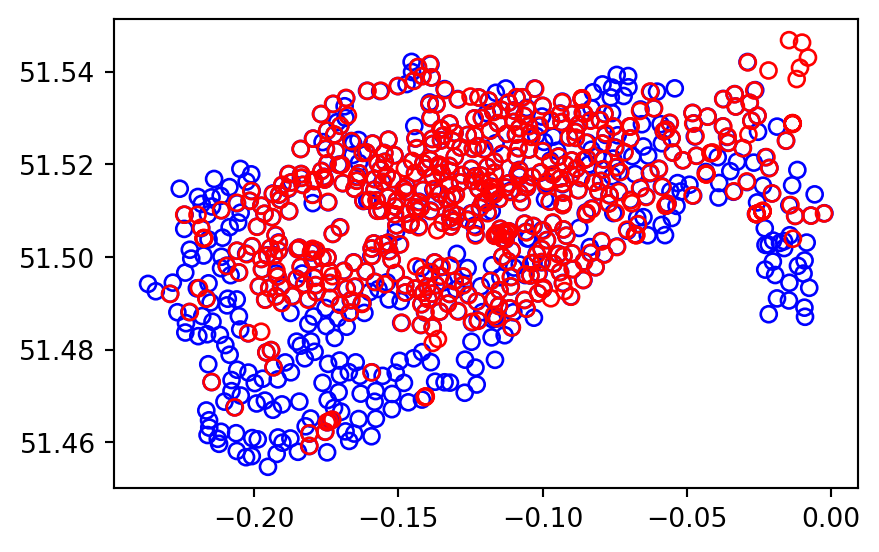
We can check if any of the points are the same by creating a pairwise boolean matrix of .intersects relations, then evaluating whether any of the values in it is True. Note that the .to_numpy method is applied to go from a DataFrame to a numpy array, for which .any gives a global rather than a row-wise summary, which is what we want in this case:
m = cycle_hire['geometry'].apply(
lambda x: cycle_hire_osm['geometry'].intersects(x)
)
m.to_numpy().any()FalseImagine that we need to join the capacity variable in cycle_hire_osm onto the official ‘target’ data contained in cycle_hire. This is when a non-overlapping join is needed. Spatial join (gpd.sjoin) along with buffered geometries can be used to do that. This is demonstrated below, using a threshold distance of 20 \(m\). Note that we transform the data to a projected CRS (27700) to use real buffer distances, in meters.
crs = 27700
cycle_hire_buffers = cycle_hire.copy().to_crs(crs)
cycle_hire_buffers['geometry'] = cycle_hire_buffers.buffer(20)
z = gpd.sjoin(
cycle_hire_buffers,
cycle_hire_osm.to_crs(crs)
)
z| id | name_left | area | ... | capacity | cyclestreets_id | description | |
|---|---|---|---|---|---|---|---|
| 0 | 1 | River Street | Clerkenwell | ... | 9.0 | NaN | NaN |
| 1 | 2 | Phillimore Gardens | Kensington | ... | 27.0 | NaN | NaN |
| ... | ... | ... | ... | ... | ... | ... | ... |
| 729 | 765 | Ranelagh Gardens | Fulham | ... | 29.0 | NaN | NaN |
| 737 | 773 | Tallis Street | Temple | ... | 14.0 | NaN | NaN |
458 rows × 12 columns
Note that the number of rows in the joined result is greater than the target. This is because some cycle hire stations in cycle_hire_buffers have multiple matches in cycle_hire_osm. To aggregate the values for the overlapping points and return the mean, we can use the aggregation methods learned in sec-vector-attribute-aggregation, resulting in an object with the same number of rows as the target. We also go back from buffers to points using .centroid:
z = z[['id', 'capacity', 'geometry']] \
.dissolve(by='id', aggfunc='mean') \
.reset_index()
z['geometry'] = z.centroid
z| id | geometry | capacity | |
|---|---|---|---|
| 0 | 1 | POINT (531203.517 182832.066) | 9.0 |
| 1 | 2 | POINT (525208.067 179391.922) | 27.0 |
| ... | ... | ... | ... |
| 436 | 765 | POINT (524652.998 175817.001) | 29.0 |
| 437 | 773 | POINT (531435.032 180916.010) | 14.0 |
438 rows × 3 columns
The capacity of nearby stations can be verified by comparing a plot of the capacity of the source cycle_hire_osm data with the results in this new object z (Figure fig-cycle-hire-z):
# Input
fig, ax = plt.subplots(1, 1, figsize=(6, 3))
cycle_hire_osm.plot(column='capacity', legend=True, ax=ax);
# Join result
fig, ax = plt.subplots(1, 1, figsize=(6, 3))
z.plot(column='capacity', legend=True, ax=ax);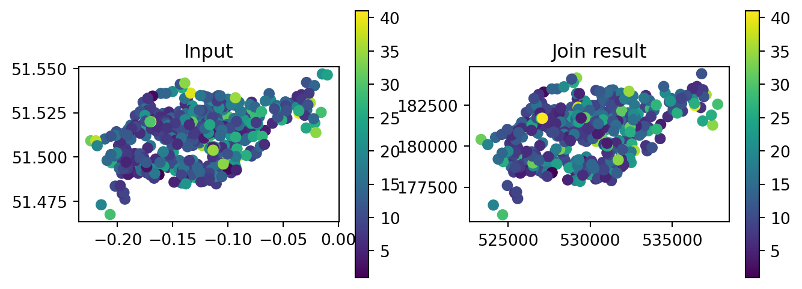

3.3.6 Spatial aggregation
As with attribute data aggregation, spatial data aggregation condenses data: aggregated outputs have fewer rows than non-aggregated inputs. Statistical aggregating functions, such as mean, average, or sum, summarise multiple values of a variable, and return a single value per grouping variable. sec-vector-attribute-aggregation demonstrated how the .groupby method, combined with summary functions such as .sum, condense data based on attribute variables. This section shows how grouping by spatial objects can be acheived using spatial joins combined with non-spatial aggregation.
Returning to the example of New Zealand, imagine you want to find out the average height of high points in each region. It is the geometry of the source (nz) that defines how values in the target object (nz_height) are grouped. This can be done in three steps:
- Figuring out which
nzregion eachnz_heightpoint falls in—usinggpd.sjoin - Summarizing the average elevation per region—using
.groupbyand.mean - Joining the result back to
nz—usingpd.merge
First, we ‘attach’ the region classification of each point, using spatial join. Note that we are using the minimal set of columns required: the geometries (for the spatial join to work), the point elevation (to later calculate an average), and the region name (to use as key when joining the results back to nz).
nz_height2 = gpd.sjoin(
nz_height[['elevation', 'geometry']],
nz[['Name', 'geometry']],
how='left'
)
nz_height2| elevation | geometry | index_right | Name | |
|---|---|---|---|---|
| 0 | 2723 | POINT (1204142.603 5049971.287) | 12 | Southland |
| 1 | 2820 | POINT (1234725.325 5048309.302) | 11 | Otago |
| ... | ... | ... | ... | ... |
| 99 | 2720 | POINT (1822262.592 5650428.656) | 2 | Waikato |
| 100 | 2732 | POINT (1822492.184 5650492.304) | 2 | Waikato |
101 rows × 4 columns
Second, we calculate the average elevation:
nz_height3 = nz_height2.groupby('Name')[['elevation']].mean()
nz_height3| elevation | |
|---|---|
| Name | |
| Canterbury | 2994.600000 |
| Manawatu-Wanganui | 2777.000000 |
| ... | ... |
| Waikato | 2734.333333 |
| West Coast | 2889.454545 |
7 rows × 1 columns
The third and final step is joining the averages with the nz layer:
nz_height4 = pd.merge(nz[['Name', 'geometry']], nz_height3, on='Name', how='left')
nz_height4| Name | geometry | elevation | |
|---|---|---|---|
| 0 | Northland | MULTIPOLYGON (((1745493.196 600... | NaN |
| 1 | Auckland | MULTIPOLYGON (((1803822.103 590... | NaN |
| ... | ... | ... | ... |
| 14 | Nelson | MULTIPOLYGON (((1624866.279 541... | NaN |
| 15 | Marlborough | MULTIPOLYGON (((1686901.914 535... | 2720.0 |
16 rows × 3 columns
We now have create the nz_height4 layer, which gives the average nz_height elevation value per polygon. The result is shown in Figure fig-nz-avg-nz-height. Note that the missing_kwds part determines the style of geometries where the symbology attribute (elevation) is missing, because the were no nz_height points overlapping with them. The default is to omit them, which is usually not what we want. With {'color':'none','edgecolor':'black'}, those polygons are shown with black outline and no fill.
nz_height4.plot(
column='elevation',
legend=True,
cmap='Blues', edgecolor='black',
missing_kwds={'color': 'none', 'edgecolor': 'black'}
);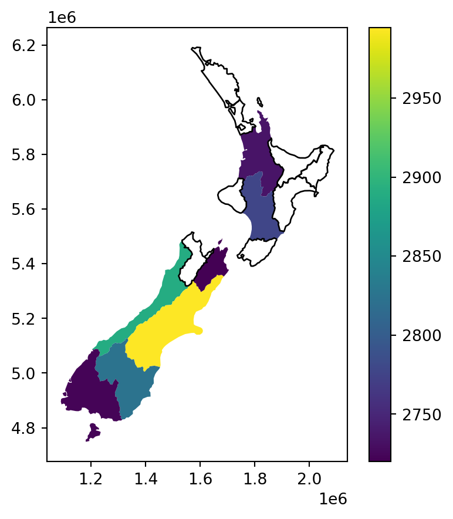
3.3.7 Joining incongruent layers
Spatial congruence is an important concept related to spatial aggregation. An aggregating object (which we will refer to as y) is congruent with the target object (x) if the two objects have shared borders. Often this is the case for administrative boundary data, whereby larger units—such as Middle Layer Super Output Areas (MSOAs) in the UK or districts in many other European countries—are composed of many smaller units.
Incongruent aggregating objects, by contrast, do not share common borders with the target (Qiu, Zhang, and Zhou 2012). This is problematic for spatial aggregation (and other spatial operations) illustrated in Figure fig-nz-and-grid: aggregating the centroid of each sub-zone will not return accurate results. Areal interpolation overcomes this issue by transferring values from one set of areal units to another, using a range of algorithms including simple area weighted approaches and more sophisticated approaches such as ‘pycnophylactic’ methods (Tobler 1979).
To demonstrate, we will create a “synthetic” layer comprising a regular grid of rectangles of size \(100\times100\) \(km\), covering the extent of the nz layer:
xmin, ymin, xmax, ymax = nz.total_bounds
res = 100000
cols = list(range(int(np.floor(xmin)), int(np.ceil(xmax+res)), res))
rows = list(range(int(np.floor(ymin)), int(np.ceil(ymax+res)), res))
rows.reverse()
polygons = []
for x in cols:
for y in rows:
polygons.append( shapely.Polygon([(x,y), (x+res, y), (x+res, y-res), (x, y-res)]) )
grid = gpd.GeoDataFrame({'geometry': polygons}, crs=nz.crs)
sel = grid.intersects(shapely.box(*nz.total_bounds))
grid = grid[sel]
grid['id'] = grid.index
grid| geometry | id | |
|---|---|---|
| 0 | POLYGON ((1090143.000 6248536.0... | 0 |
| 1 | POLYGON ((1090143.000 6148536.0... | 1 |
| ... | ... | ... |
| 157 | POLYGON ((1990143.000 4948536.0... | 157 |
| 158 | POLYGON ((1990143.000 4848536.0... | 158 |
150 rows × 2 columns
as shown in Figure fig-nz-and-grid.
base = grid.plot(color='none', edgecolor='grey')
nz.plot(ax=base, column='Population', edgecolor='black', legend=True, cmap='viridis_r');
base.set_title('Population');
Our goal, now, is to “transfer” the Population attribute to the rectangular grid polygons, which is an example of a join between incongruent layers. To do that, we basically need to calculate–for each grid cell—the weighted sum of the population in nz polygons coinciding with that cell. The weights in the weighted sum calculation are the ratios between the area of the coinciding “part” out of the entire nz polygon. That is, we (inevitably) assume that the population in each nz polygon is equally distributed across space, therefore a partial nz polygon contains the respective partial population size.
We start with calculating the entire area of each nz polygon, as follows, using the .area method (see sec-area-length):
nz['area'] = nz.area
nz| Name | Island | Land_area | ... | Sex_ratio | geometry | area | |
|---|---|---|---|---|---|---|---|
| 0 | Northland | North | 12500.561149 | ... | 0.942453 | MULTIPOLYGON (((1745493.196 600... | 1.289058e+10 |
| 1 | Auckland | North | 4941.572557 | ... | 0.944286 | MULTIPOLYGON (((1803822.103 590... | 4.911565e+09 |
| ... | ... | ... | ... | ... | ... | ... | ... |
| 14 | Nelson | South | 422.195242 | ... | 0.925967 | MULTIPOLYGON (((1624866.279 541... | 4.080754e+08 |
| 15 | Marlborough | South | 10457.745485 | ... | 0.957792 | MULTIPOLYGON (((1686901.914 535... | 1.046485e+10 |
16 rows × 8 columns
Next, we use the .overlay method to calculate the pairwise intersections between nz and grid, hereby named nz_grid. We also calculate the area of the intersections, hereby named area_sub. If an nz polygon was completely within a single grid polygon, then area_sub is going to be equal to area; otherwise, it is going to be smaller:
nz_grid = nz.overlay(grid)
nz_grid = nz_grid[['id', 'area', 'Population', 'geometry']]
nz_grid['area_sub'] = nz_grid.area
nz_grid| id | area | Population | geometry | area_sub | |
|---|---|---|---|---|---|
| 0 | 64 | 1.289058e+10 | 175500.0 | POLYGON ((1586362.965 6168009.0... | 3.231015e+08 |
| 1 | 80 | 1.289058e+10 | 175500.0 | POLYGON ((1590143.000 6162776.6... | 4.612641e+08 |
| ... | ... | ... | ... | ... | ... |
| 108 | 87 | 4.080754e+08 | 51400.0 | POLYGON ((1649908.695 5455398.2... | 1.716260e+07 |
| 109 | 87 | 1.046485e+10 | 46200.0 | MULTIPOLYGON (((1678688.086 545... | 4.526248e+08 |
110 rows × 5 columns
The resulting layer nz_grid is shown in Figure fig-nz-and-grid2.
base = grid.plot(color='none', edgecolor='grey')
nz_grid.plot(ax=base, column='Population', edgecolor='black', legend=True, cmap='viridis_r');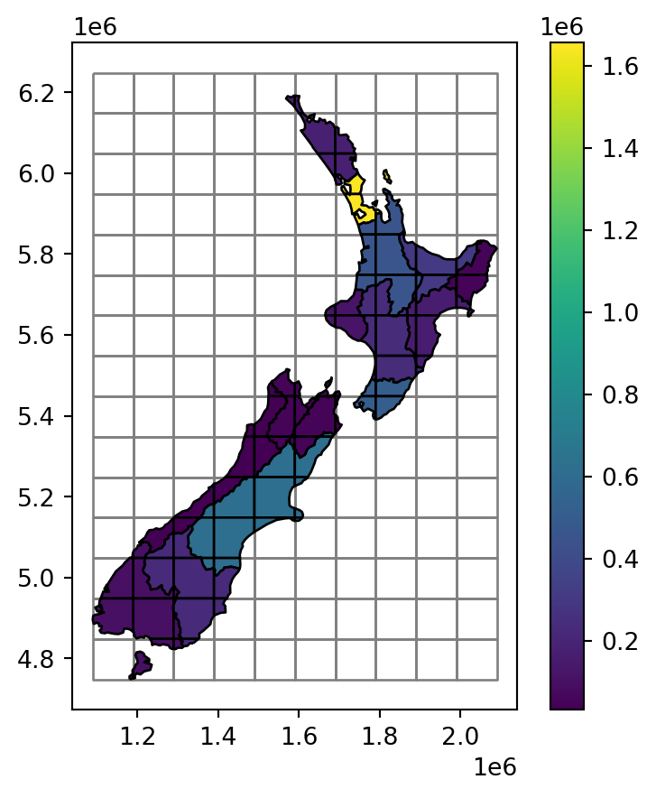
Note that each of the “intersections” still holds the Population attribute of its “origin” feature of nz, as depicted in Figure fig-nz-and-grid2. The real population size of each nz_grid feature, however, is smaller (or equal), depending on the geographic area proportion that it occupies out of the original nz feature. To make the “correction”, we first calculate the ratio (area_prop) and then multiply it by the population. The new (lowercase) attribute population now has the correct estimate of population sizes in nz_grid:
nz_grid['area_prop'] = nz_grid['area_sub'] / nz_grid['area']
nz_grid['population'] = nz_grid['Population'] * nz_grid['area_prop']
nz_grid| id | area | Population | ... | area_sub | area_prop | population | |
|---|---|---|---|---|---|---|---|
| 0 | 64 | 1.289058e+10 | 175500.0 | ... | 3.231015e+08 | 0.025065 | 4398.897141 |
| 1 | 80 | 1.289058e+10 | 175500.0 | ... | 4.612641e+08 | 0.035783 | 6279.925114 |
| ... | ... | ... | ... | ... | ... | ... | ... |
| 108 | 87 | 4.080754e+08 | 51400.0 | ... | 1.716260e+07 | 0.042057 | 2161.752203 |
| 109 | 87 | 1.046485e+10 | 46200.0 | ... | 4.526248e+08 | 0.043252 | 1998.239223 |
110 rows × 7 columns
What is left to be done is to sum (see sec-vector-attribute-aggregation) the population in all parts forming the same grid cell:
nz_grid = nz_grid.groupby('id')['population'].sum().reset_index()
nz_grid| id | population | |
|---|---|---|
| 0 | 11 | 67.533590 |
| 1 | 12 | 15339.996965 |
| ... | ... | ... |
| 55 | 149 | 31284.910446 |
| 56 | 150 | 129.326331 |
57 rows × 2 columns
and join (see sec-vector-attribute-joining) them back to the grid layer:
grid = pd.merge(grid, nz_grid[['id', 'population']], on='id', how='left')
grid| geometry | id | population | |
|---|---|---|---|
| 0 | POLYGON ((1090143.000 6248536.0... | 0 | NaN |
| 1 | POLYGON ((1090143.000 6148536.0... | 1 | NaN |
| ... | ... | ... | ... |
| 148 | POLYGON ((1990143.000 4948536.0... | 157 | NaN |
| 149 | POLYGON ((1990143.000 4848536.0... | 158 | NaN |
150 rows × 3 columns
The final result grid, with the incongruently-joined population attribute from nz, is shown in Figure fig-nz-and-grid3.
base = grid.plot(column='population', edgecolor='black', legend=True, cmap='viridis_r');
nz.plot(ax=base, color='none', edgecolor='grey', legend=True);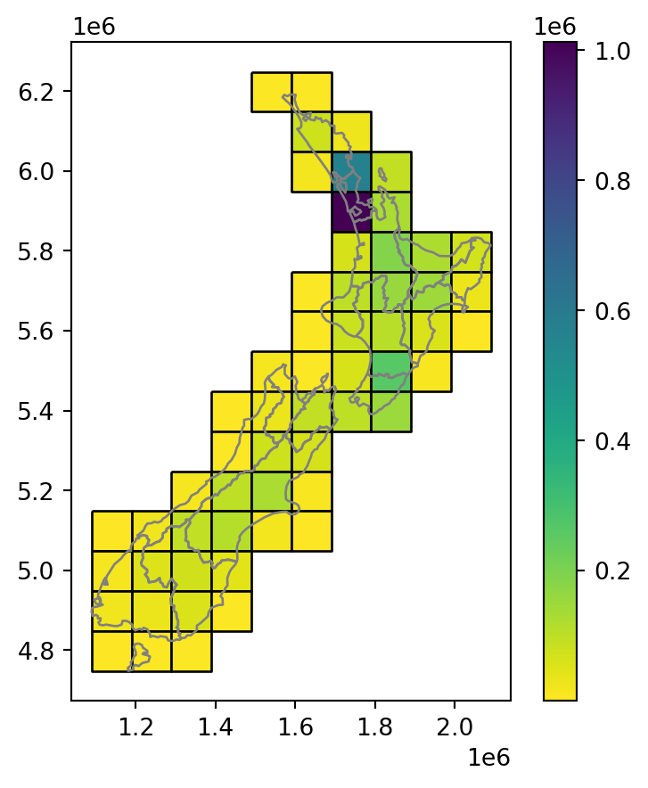
We can demonstrate that, expectedly, the summed population in nz and grid is identical, even though the geometry is different (since we created grid to completely cover nz):
nz['Population'].sum()4787200.0grid['population'].sum()4787199.999999998The procedure in this section is known as an area-weighted interpolation of a spatially extensive (e.g., population) variable. An area-weighted interpolation of a spatially intensive variable (e.g., population density) is almost identical, except that we would have to calculate the weighted .mean rather than .sum, to preserve the average rather than the sum.
3.3.8 Distance relations
While topological relations are binary — a feature either intersects with another or does not — distance relations are continuous. The distance between two objects is calculated with the distance method. The method is applied on a GeoSeries (or a GeoDataFrame), with the argument being an individual shapely geometry. The result is a Series of pairwise distances.
This is illustrated in the code chunk below, which finds the distance between the three highest point in New Zealand:
nz_highest = nz_height \
.sort_values(by='elevation', ascending=False) \
.iloc[:3, :]
nz_highest| t50_fid | elevation | geometry | |
|---|---|---|---|
| 64 | 2372236 | 3724 | POINT (1369317.630 5169132.284) |
| 63 | 2372235 | 3717 | POINT (1369512.866 5168235.616) |
| 67 | 2372252 | 3688 | POINT (1369381.942 5168761.875) |
and the geographic centroid of the Canterbury region, created in Section 4.2.1:
canterbury_centroid = canterbury.centroid.iloc[0]Here are the distances:
nz_highest.distance(canterbury_centroid)64 115539.995747
63 115390.248038
67 115493.594066
dtype: float64To obtain a distance matrix, i.e., a pairwise set of distances between all combinations of features in objects x and y, we need to use the .apply method. This is illustrated in the command below, which finds the distances between the first three features in nz_height and the Otago and Canterbury regions of New Zealand represented by the object co:
sel = nz['Name'].str.contains('Canter|Otag')
co = nz[sel]
co| Name | Island | Land_area | ... | Sex_ratio | geometry | area | |
|---|---|---|---|---|---|---|---|
| 10 | Canterbury | South | 44504.499091 | ... | 0.975327 | MULTIPOLYGON (((1686901.914 535... | 4.532656e+10 |
| 11 | Otago | South | 31186.309188 | ... | 0.951169 | MULTIPOLYGON (((1335204.789 512... | 3.190356e+10 |
2 rows × 8 columns
The distance matrix d is obtained as follows (technically speaking, this is a DataFrame). In plain language, we take the geometry from each each row in nz_height.iloc[:3, :], and apply the .distance method on co with that row as the argument:
d = nz_height.iloc[:3, :].apply(lambda x: co.distance(x['geometry']), axis=1)
d| 10 | 11 | |
|---|---|---|
| 0 | 123537.158269 | 15497.717252 |
| 1 | 94282.773074 | 0.000000 |
| 2 | 93018.560814 | 0.000000 |
Note that the distance between the second and third features in nz_height and the second feature in co is zero. This demonstrates the fact that distances between points and polygons refer to the distance to any part of the polygon: The second and third points in nz_height are in Otago, which can be verified by plotting them:
base = co.iloc[[1]].plot(color='none')
nz_height.iloc[1:3, :].plot(ax=base);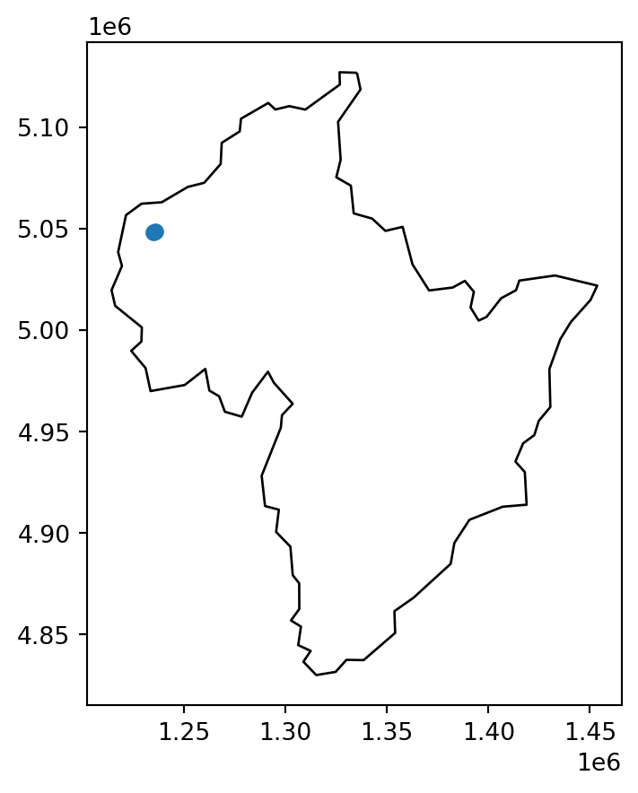
3.4 Spatial operations on raster data
3.4.1 Spatial subsetting
The previous chapter (Section sec-manipulating-raster-objects) demonstrated how to retrieve values associated with specific cell IDs or row and column combinations. Raster objects can also be extracted by location (coordinates) and other spatial objects. To use coordinates for subsetting, we can use the .sample method of a rasterio file connection object, combined with a list of coordinate tuples. The methods is demonstrated below to find the value of the cell that covers a point located at coordinates of 0.1, 0.1 in elev. The returned object is a generator:
src_elev.sample([(0.1, 0.1)])<generator object sample_gen at 0x7f92758ff320>In case we want all values at once we can apply list. The result is 16:
list(src_elev.sample([(0.1, 0.1)]))[array([16], dtype=uint8)]Another common use case of spatial subsetting is using a boolean mask, based on another raster with the same extent and resolution, or the original one, as illustrated in Figure fig-raster-subset. To do that, we “erase” the values in the array of one raster, according to another corresponding “mask” raster. For example, let us read the elev.tif raster array:
elev = src_elev.read(1)
elevarray([[ 1, 2, 3, 4, 5, 6],
[ 7, 8, 9, 10, 11, 12],
[13, 14, 15, 16, 17, 18],
[19, 20, 21, 22, 23, 24],
[25, 26, 27, 28, 29, 30],
[31, 32, 33, 34, 35, 36]], dtype=uint8)and create a correspinding random mask:
np.random.seed(1)
mask = np.random.choice([True, False], elev.shape)
maskarray([[False, False, True, True, False, False],
[False, False, False, True, True, False],
[ True, False, False, True, True, False],
[ True, True, True, False, True, True],
[False, True, True, True, False, True],
[ True, True, False, False, False, False]])In the code chunk above, we have created a mask object called mask with values randomly assigned to True and False. Next, we want to keep those values of elev which are False in mask (i.e., they are not masked). In other words, we want to mask elev with mask. The result is stored in a copy named elev1. To be able to store np.nan in the raster, we also need to convert it to float (see sec-summarizing-raster-objects):
elev1 = elev.copy()
elev1 = elev1.astype('float64')
elev1[mask] = np.nan
elev1array([[ 1., 2., nan, nan, 5., 6.],
[ 7., 8., 9., nan, nan, 12.],
[nan, 14., 15., nan, nan, 18.],
[nan, nan, nan, 22., nan, nan],
[25., nan, nan, nan, 29., nan],
[nan, nan, 33., 34., 35., 36.]])The result is shown in Figure fig-raster-subset.
fig, axes = plt.subplots(ncols=3, figsize=(8,4))
rasterio.plot.show(elev, ax=axes[0])
rasterio.plot.show(mask, ax=axes[1])
rasterio.plot.show(elev1, ax=axes[2])
axes[0].set_title('Original')
axes[1].set_title('Mask')
axes[2].set_title('Result');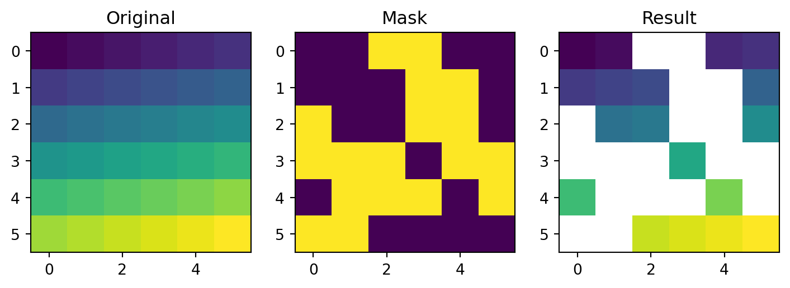
The above approach can be also used to replace some values (e.g., expected to be wrong) with np.nan:
elev1 = elev.copy()
elev1 = elev1.astype('float64')
elev1[elev1 < 20] = np.nan
elev1array([[nan, nan, nan, nan, nan, nan],
[nan, nan, nan, nan, nan, nan],
[nan, nan, nan, nan, nan, nan],
[nan, 20., 21., 22., 23., 24.],
[25., 26., 27., 28., 29., 30.],
[31., 32., 33., 34., 35., 36.]])These operations are in fact Boolean local operations, since we compare cell-wise two rasters. The next subsection explores these and related operations in more detail.
3.4.2 Map algebra
The term ‘map algebra’ was coined in the late 1970s to describe a “set of conventions, capabilities, and techniques” for the analysis of geographic raster and (although less prominently) vector data (Tomlin 1994). In this context, we define map algebra more narrowly, as operations that modify or summarise raster cell values, with reference to surrounding cells, zones, or statistical functions that apply to every cell.
Map algebra operations tend to be fast, because raster datasets only implicitly store coordinates, hence the old adage “raster is faster but vector is corrector”. The location of cells in raster datasets can be calculated by using its matrix position and the resolution and origin of the dataset (stored in the header). For the processing, however, the geographic position of a cell is barely relevant as long as we make sure that the cell position is still the same after the processing. Additionally, if two or more raster datasets share the same extent, projection and resolution, one could treat them as matrices for the processing.
This is the way that map algebra works with the terra package. First, the headers of the raster datasets are queried and (in cases where map algebra operations work on more than one dataset) checked to ensure the datasets are compatible. Second, map algebra retains the so-called one-to-one locational correspondence, meaning that cells cannot move. This differs from matrix algebra, in which values change position, for example when multiplying or dividing matrices.
Map algebra (or cartographic modeling with raster data) divides raster operations into four subclasses (Tomlin 1990), with each working on one or several grids simultaneously:
- Local or per-cell operations
- Focal or neighborhood operations. Most often the output cell value is the result of a 3 x 3 input cell block
- Zonal operations are similar to focal operations, but the surrounding pixel grid on which new values are computed can have irregular sizes and shapes
- Global or per-raster operations; that means the output cell derives its value potentially from one or several entire rasters
This typology classifies map algebra operations by the number of cells used for each pixel processing step and the type of the output. For the sake of completeness, we should mention that raster operations can also be classified by discipline such as terrain, hydrological analysis, or image classification. The following sections explain how each type of map algebra operations can be used, with reference to worked examples.
3.4.3 Local operations
Local operations comprise all cell-by-cell operations in one or several layers. Raster algebra is a classical use case of local operations - this includes adding or subtracting values from a raster, squaring and multipling rasters. Raster algebra also allows logical operations such as finding all raster cells that are greater than a specific value (5 in our example below). Local operations are applied using the numpy array operations syntax, as demonstrated below:
First, we need to read raster values:
elev = src_elev.read(1)
elevarray([[ 1, 2, 3, 4, 5, 6],
[ 7, 8, 9, 10, 11, 12],
[13, 14, 15, 16, 17, 18],
[19, 20, 21, 22, 23, 24],
[25, 26, 27, 28, 29, 30],
[31, 32, 33, 34, 35, 36]], dtype=uint8)Now, any element-wise array operation can be applied. For example:
elev + elevarray([[ 2, 4, 6, 8, 10, 12],
[14, 16, 18, 20, 22, 24],
[26, 28, 30, 32, 34, 36],
[38, 40, 42, 44, 46, 48],
[50, 52, 54, 56, 58, 60],
[62, 64, 66, 68, 70, 72]], dtype=uint8)Figure fig-raster-local-operations demonstrates a few more examples.
fig, axes = plt.subplots(ncols=4, figsize=(8,4))
rasterio.plot.show(elev + elev, ax=axes[0], cmap='Oranges')
rasterio.plot.show(elev1 ** 2, ax=axes[1], cmap='Oranges') # using elev here produces int8 overflows
rasterio.plot.show(np.log(elev), ax=axes[2], cmap='Oranges')
rasterio.plot.show(elev > 5, ax=axes[3], cmap='Oranges')
axes[0].set_title('elev+elev')
axes[1].set_title('elev ** 2')
axes[2].set_title('np.log(elev)')
axes[3].set_title('elev > 5');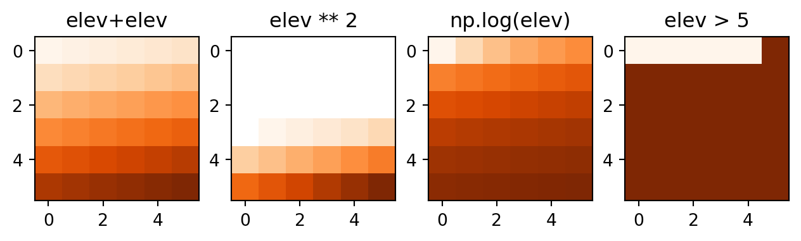
Another good example of local operations is the classification of intervals of numeric values into groups such as grouping a digital elevation model into low (class 1), middle (class 2) and high elevations (class 3). Here, we assign the raster values in the ranges 0–12, 12–24 and 24–36 are reclassified to take values 1, 2 and 3, respectively.
recl = elev.copy()
recl[(elev > 0) & (elev <= 12)] = 1
recl[(elev > 12) & (elev <= 24)] = 2
recl[(elev > 24) & (elev <= 36)] = 3The reclassified result is shown in Figure fig-raster-reclassify.
fig, axes = plt.subplots(ncols=2, figsize=(8,4))
rasterio.plot.show(elev, ax=axes[0], cmap='Oranges')
rasterio.plot.show(recl, ax=axes[1], cmap='Oranges')
axes[0].set_title('Original')
axes[1].set_title('Reclassified');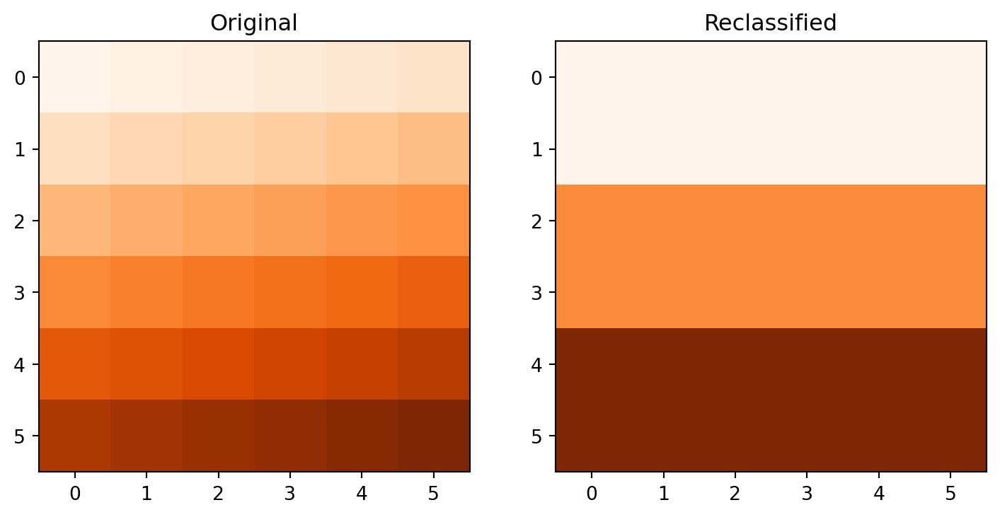
The calculation of the normalized difference vegetation index (NDVI) is a well-known local (pixel-by-pixel) raster operation. It returns a raster with values between -1 and 1; positive values indicate the presence of living plants (mostly > 0.2). NDVI is calculated from red and near-infrared (NIR) bands of remotely sensed imagery, typically from satellite systems such as Landsat or Sentinel. Vegetation absorbs light heavily in the visible light spectrum, and especially in the red channel, while reflecting NIR light, explaining the NVDI formula (Equation eq-ndvi):
\[NDVI=\frac{NIR-Red} {NIR+Red} \tag{3.1}\]
Let’s calculate NDVI for the multispectral satellite file of the Zion National Park.
multi_rast = src_multi_rast.read()
nir = multi_rast[3,:,:]
red = multi_rast[2,:,:]
ndvi = (nir-red)/(nir+red)Convert values >1 to “No Data”:
ndvi[ndvi>1] = np.nanWhen plotting an RGB image using the show function, the function assumes that:
- Values are in the range
[0,1]for floats, or[0,255]for integers (otherwise clipped) - The order of bands is RGB
To “prepare” the multi-band raster for show, we therefore reverse the order of bands (which is originally BGR+NIR), and divided by the maximum to set the maximum value at 1:
multi_rast_rgb = multi_rast[(2,1,0), :, :] / multi_rast.max()The result is shown in Figure fig-raster-ndvi.
fig, axes = plt.subplots(ncols=2, figsize=(8,4))
rasterio.plot.show(multi_rast_rgb, ax=axes[0], cmap='RdYlGn')
rasterio.plot.show(ndvi, ax=axes[1], cmap='Greens')
axes[0].set_title('RGB image')
axes[1].set_title('NDVI');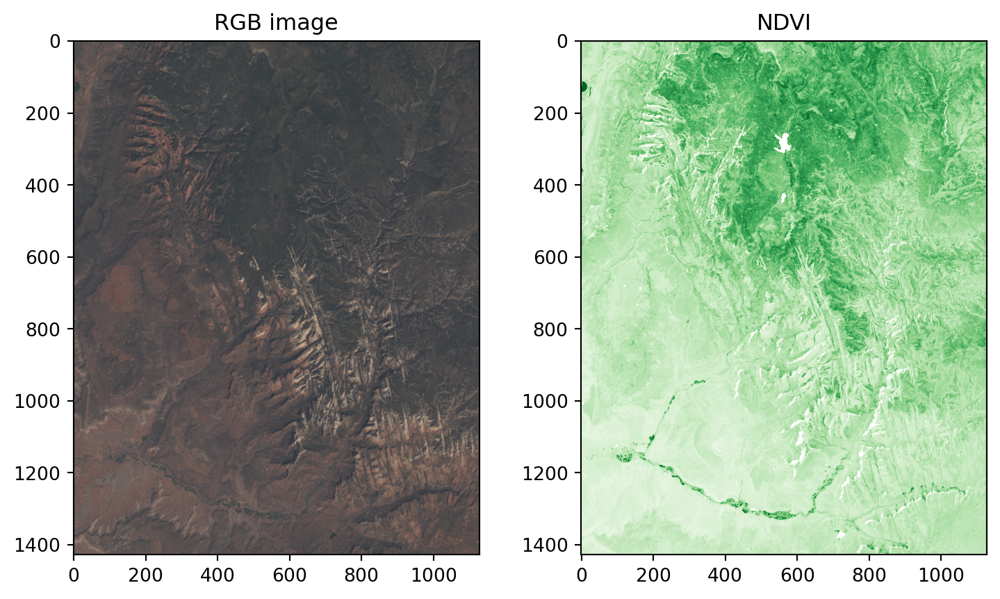
3.4.4 Focal operations
While local functions operate on one cell, though possibly from multiple layers, focal operations take into account a central (focal) cell and its neighbors. The neighborhood (also named kernel, filter or moving window) under consideration is typically of size 3-by-3 cells (that is the central cell and its eight surrounding neighbors), but can take on any other (not necessarily rectangular) shape as defined by the user. A focal operation applies an aggregation function to all cells within the specified neighborhood, uses the corresponding output as the new value for the the central cell, and moves on to the next central cell (Figure …). Other names for this operation are spatial filtering and convolution (Burrough, McDonnell, and Lloyd 2015).
In Python, the scipy.ndimage package has a comprehensive collection of functions to perform filtering of numpy arrays, such as:
minimum_filtermaximum_filteruniform_filter(i.e., mean filter)median_filteretc.
In this group of functions, we define the shape of the moving window with either one of:
size—a single number or tuple, implying a filter of those dimensionsfootprint—a boolean array, representing both the window shape and the identity of elements being included
In addition to specific built-in filters,
convolveapplies the sum function after multiplying by a customweightsarraygeneric_filtermakes it possible to pass any custom function, where the user can specify any type of custom window-based calculatio.
For example, here we apply the minimum filter with window size of 3 on elev:
elevarray([[ 1, 2, 3, 4, 5, 6],
[ 7, 8, 9, 10, 11, 12],
[13, 14, 15, 16, 17, 18],
[19, 20, 21, 22, 23, 24],
[25, 26, 27, 28, 29, 30],
[31, 32, 33, 34, 35, 36]], dtype=uint8)elev_min = scipy.ndimage.minimum_filter(elev, size=3)
elev_minarray([[ 1, 1, 2, 3, 4, 5],
[ 1, 1, 2, 3, 4, 5],
[ 7, 7, 8, 9, 10, 11],
[13, 13, 14, 15, 16, 17],
[19, 19, 20, 21, 22, 23],
[25, 25, 26, 27, 28, 29]], dtype=uint8)Special care should be given to the edge pixels. How should they be calculated? scipy.ndimage gives several options through the mode parameter:
reflect(the default)constantnearestmirrorwrap
Sometimes artificially extending raster edges is considered unsuitable. In other words, we may wish the resulting raster to contain pixel values with “complete” windows only, for example to have a uniform sample size or because values in all directions matter (such as in topographic calculations). There is no specific option not to extend edges in scipy.ndimage. However, to get the same effect, the edges of the filtered array can be assigned with nan, in a number of rows and columns according to filter size. For example, when using a filter of size=3, the first “layer” of pixels may be assigned with nan, reflecting the fact that these pixels have incomplete 3*3 neighborhoods:
elev_min = elev_min.astype('float')
elev_min[:, [0, -1]] = np.nan
elev_min[[0, -1], :] = np.nan
elev_minarray([[nan, nan, nan, nan, nan, nan],
[nan, 1., 2., 3., 4., nan],
[nan, 7., 8., 9., 10., nan],
[nan, 13., 14., 15., 16., nan],
[nan, 19., 20., 21., 22., nan],
[nan, nan, nan, nan, nan, nan]])We can quickly check if the output meets our expectations. In our example, the minimum value has to be always the upper left corner of the moving window (remember we have created the input raster by row-wise incrementing the cell values by one starting at the upper left corner).
Focal functions or filters play a dominant role in image processing. Low-pass or smoothing filters use the mean function to remove extremes. In the case of categorical data, we can replace the mean with the mode, which is the most common value. By contrast, high-pass filters accentuate features. The line detection Laplace and Sobel filters might serve as an example here.
Terrain processing, the calculation of topographic characteristics such as slope, aspect and flow directions, relies on focal functions. The TerrainAttribute function from package richdem can be used to calculate common metrics, specified through the attrib argument, namely:
slope_riserunHorn (1981) doi: 10.1109/PROC.1981.11918slope_percentageHorn (1981) doi: 10.1109/PROC.1981.11918slope_degreesHorn (1981) doi: 10.1109/PROC.1981.11918slope_radiansHorn (1981) doi: 10.1109/PROC.1981.11918aspectHorn (1981) doi: 10.1109/PROC.1981.11918curvatureZevenbergen and Thorne (1987) doi: 10.1002/esp.3290120107planform_curvatureZevenbergen and Thorne (1987) doi: 10.1002/esp.3290120107profile_curvatureZevenbergen and Thorne (1987) doi: 10.1002/esp.3290120107
3.4.5 Zonal operations
Just like focal operations, zonal operations apply an aggregation function to multiple raster cells. However, a second raster, usually with categorical values, defines the zonal filters (or ‘zones’) in the case of zonal operations, as opposed to a predefined neighborhood window in the case of focal operation presented in the previous section. Consequently, raster cells defining the zonal filter do not necessarily have to be neighbors. Our grain size raster is a good example, as illustrated in the right panel of Figure 3.2: different grain sizes are spread irregularly throughout the raster. Finally, the result of a zonal operation is a summary table grouped by zone which is why this operation is also known as zonal statistics in the GIS world. This is in contrast to focal operations which return a raster object.
To demonstrate, let us get back to the grain and elev rasters (Figure 3.2). To calculate zonal statistics, we use the arrays with raster values. The elev array was already imported earlier:
grain = src_grain.read(1)
grainarray([[1, 0, 1, 2, 2, 2],
[0, 2, 0, 0, 2, 1],
[0, 2, 2, 0, 0, 2],
[0, 0, 1, 1, 1, 1],
[1, 1, 1, 2, 1, 1],
[2, 1, 2, 2, 0, 2]], dtype=uint8)Our interntion is to calculate the average (or any other summary function, for that matter) of elevation in each zone defined by grain values. First, we can obtain the unique values defining the zones using np.unique:
np.unique(grain)array([0, 1, 2], dtype=uint8)Now, we can use dictionary conprehension to “split” the elev array into separate one-dimensional arrays with values per grain group, with keys being the unique grain values:
z = {i: elev[grain == i] for i in np.unique(grain)}
z{0: array([ 2, 7, 9, 10, 13, 16, 17, 19, 20, 35], dtype=uint8),
1: array([ 1, 3, 12, 21, 22, 23, 24, 25, 26, 27, 29, 30, 32], dtype=uint8),
2: array([ 4, 5, 6, 8, 11, 14, 15, 18, 28, 31, 33, 34, 36], dtype=uint8)}At this stage, we can expand the dictionary comprehension expression to calculate the mean elevation associated with each grain size class. Instead of placing the elevation values (elev[grain==i]) into the dictionary values, we place their mean (elev[grain==i].mean()):
z = {i: elev[grain == i].mean() for i in np.unique(grain)}
z{0: 14.8, 1: 21.153846153846153, 2: 18.692307692307693}This returns the statistics for each category, here the mean elevation for each grain size class. For example, the mean elevation in pixels characterized by grain size 0 is 14.8, and so on.
3.4.6 Global operations and distances
Global operations are a special case of zonal operations with the entire raster dataset representing a single zone. The most common global operations are descriptive statistics for the entire raster dataset such as the minimum or maximum—we already discussed those in sec-summarizing-raster-objects.
Aside from that, global operations are also useful for the computation of distance and weight rasters. In the first case, one can calculate the distance from each cell to specific target cells or vector geometries. For example, one might want to compute the distance to the nearest coast (see example in sec-distance-to-nearest-geometry). We might also want to consider topography, that means, we are not only interested in the pure distance but would like also to avoid the crossing of mountain ranges when going to the coast. To do so, we can weight the distance with elevation so that each additional altitudinal meter “prolongs” the Euclidean distance (this is beyond the scope of the book). Visibility and viewshed computations also belong to the family of global operations (this is also beyond the scope of the book).
3.4.7 Map algebra counterparts in vector processing
Many map algebra operations have a counterpart in vector processing (Liu and Mason 2009 to add citation…). Computing a distance raster (global operation) while only considering a maximum distance (logical focal operation) is the equivalent to a vector buffer operation (sec-buffers). Reclassifying raster data (either local or zonal function depending on the input) is equivalent to dissolving vector data (Section sec-geometry-unions). Overlaying two rasters (local operation), where one contains “No Data” values representing a mask, is similar to vector clipping (Section sec-clipping). Quite similar to spatial clipping is intersecting two layers (Section sec-spatial-subsetting). The difference is that these two layers (vector or raster) simply share an overlapping area. However, be careful with the wording. Sometimes the same words have slightly different meanings for raster and vector data models. While aggregating polygon geometries means dissolving boundaries, for raster data geometries it means increasing cell sizes and thereby reducing spatial resolution. Zonal operations dissolve the cells of one raster in accordance with the zones (categories) of another raster dataset using an aggregating function.
3.4.8 Merging rasters
Suppose we would like to compute the NDVI (see sec-raster-local-operations), and additionally want to compute terrain attributes from elevation data for observations within a study area. Such computations rely on remotely sensed information. The corresponding imagery is often divided into scenes covering a specific spatial extent (i.e., “tiles”), and frequently, a study area covers more than one scene. Then, we would need to merge (also known as “mosaic”) the scenes covered by our study area. In the easiest case, we can just merge these scenes, that is put them side by side. However, the procedure is the same regardless of the number of scenes. In case when all scenes are “aligned” (i.e., share the same origin and resolution), this can be thought of as simply gluing them into one big raster; otherwise, all scenes are resampled (see sec-raster-resampling) to the grid defined by the first scene.
For example, let us merge digital elevation data from two SRTM elevation tiles, for Austria (aut.tif) and Switzerland (ch.tif). Merging can be done using function rasterio.merge.merge, which accepts a list of raster file connections, and returns the new ndarray and a “transform”:
src_1 = rasterio.open('data/aut.tif')
src_2 = rasterio.open('data/ch.tif')
out_image, out_transform = rasterio.merge.merge([src_1, src_2])Both inputs and the result are shown in Figure fig-raster-merge:
fig, axes = plt.subplots(2, 2, figsize=(8,4))
rasterio.plot.show(src_1, ax=axes[0][0])
rasterio.plot.show(src_2, ax=axes[0][1])
rasterio.plot.show(out_image, transform=out_transform, ax=axes[1][0])
axes[1][1].axis('off')
axes[0][0].set_title('aut.tif')
axes[0][1].set_title('ch.tif')
axes[1][0].set_title('Mosaic (aut.tif+ch.tif)');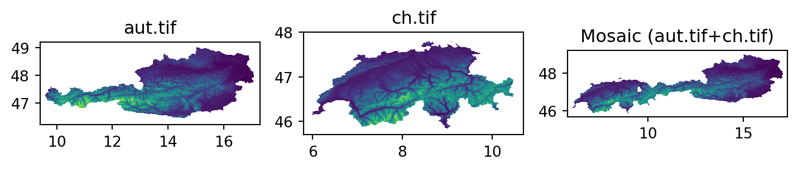
By default (method='first'), areas of overlap retain the value of the first raster. Other possible methods are:
'last'—Value of the last raster'min'—Minimum value'max'—Maximum value
When dealing with non-overlapping tiles, such as aut.tif and ch.tif (above), the method argument has no practical effect. However, it becomes relevant when we want to combine spectral imagery from scenes that were taken on different dates. The above four options for method do not cover the commonly required scenario when we would like to compute the mean value—for example to calculate a seasonal average NDVI image from a set of partially overlapping satellite images (such as Landsat). An alternative worflow to rasterio.merge.merge, for calculating a mosaic as well as “averaging” any overlaps, could be to go through two steps:
- Resampling all scenes into a common “global” grid (sec-raster-resampling), thereby producing a series of “matching” rasters (with the area surrounding each scene set as “No Data”)
- Averaging the rasters through raster algebra (sec-raster-local-operations), as in
np.mean(m,axis=0)ornp.nanmean(m,axis=0), wheremis the multi-band array, which would return a single-band array of averages
3.5 Exercises
- Write a function which accepts and array and an
intspecifying the number of rows/columns to erase along an array edges. The function needs to return the modified array withnp.nanvalues along its edges.